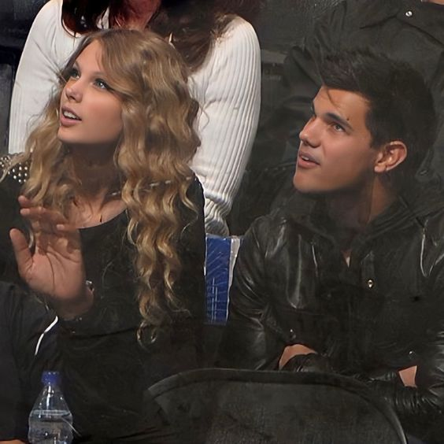

Taylor Lautner (The Original)
Taylor Lautner starting martial arts at seven. He became a three time Junior World Champion by the age of twevle and had earned the world numnber one spot in multiple martial arts divisions. But at seven years old,his martial arts instructor encouraged him to audition for a small role in a Burger King commericial, he did not get it. But what he did get was the want to make acting a career. He went on to land multiple small acting role in TV shows and films. One of his most popular films being Sharkboy in "The Adventures of Sharkboy and Lavagirl". But it was his role in "Twilight" as Jacob Black that sent him into a new level of fame.
